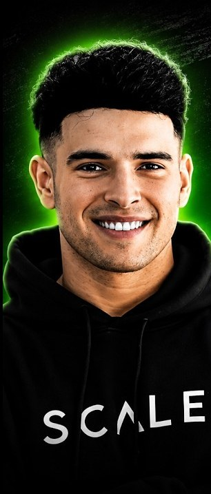
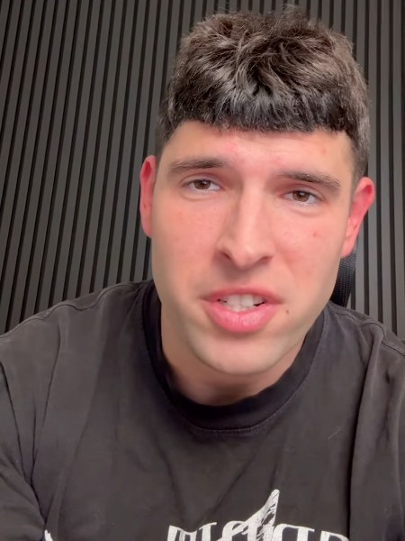
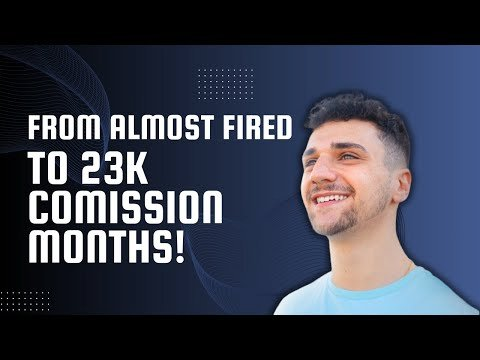
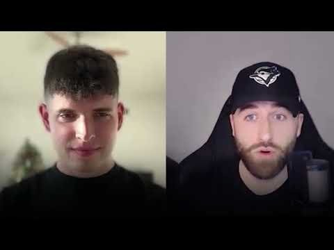
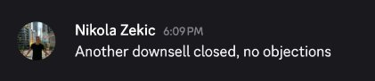
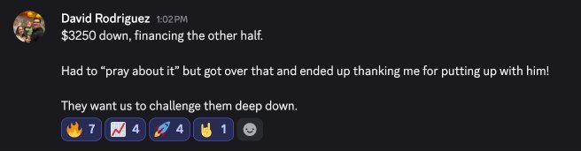
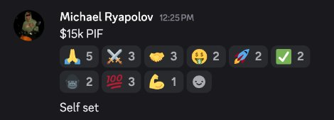
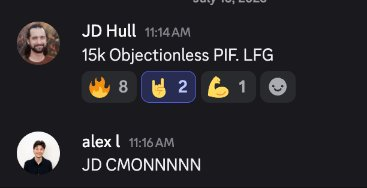
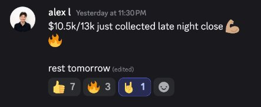
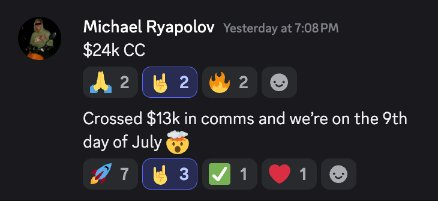

The free live masterclass for new and stuck closers. Learn the First Call Framework Tristan uses to lead 45-minute Zoom calls, handle the real objection and stop losing deals before you pitch.
Save my free seatLimited live seatsMasterclass starts in

How to open so the prospect follows your structure, instead of you chasing theirs.
The questions that uncover the real problem in the first five minutes, so you stop pitching blind.
Why "anything else?" kills deals, and the "what else?" question Tristan teaches instead.
What the offers that pay $10k+ a month look for in a closer, from someone who hires them.
The exact call structure, start to finish.
Real calls pulled apart, live.
Bring your hardest objection.
The "What Else?" Question Sheet for everyone who joins live.

Tristan started in high-ticket sales five years ago with no experience. His commissions grew every year: $91k in year one, $105k in year two, $345k in year three and $475k in year four.
Today he manages sales teams for three high-ticket offers, has hired 500+ sales reps and run 2,000+ interviews, so he knows exactly what separates the closers who get hired from the ones who don't.
He has taught thousands of closers, and helped hundreds of them scale past $10k a month.
$0 to $17K/mo
With zero prior high-ticket closing experience

Itai
From the chopping block to $23K/mo

Sam
Doubled his close rate in 30 days






Results are from Tristan's published student interviews. They are not typical, and your results depend on your effort.
One hour, live with Tristan, completely free. Bring your hardest objection.
Save my free seatLimited live seats(your local time)
Sample page built by Mavryk. No data is collected.